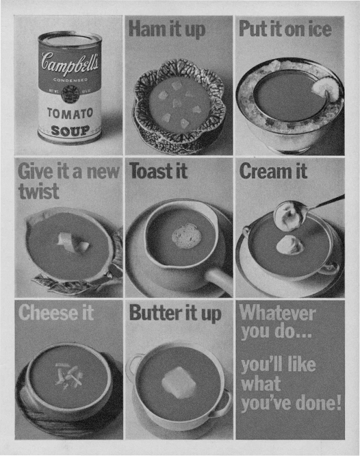

ABSENCE
IN DESIGN
IS VERY IMPORTANT
Karel Martens on paying attention to the things we don’t see.
One of the best-known names in graphic design, the Dutch modernist master and teacher reflects on his work and career to date.
